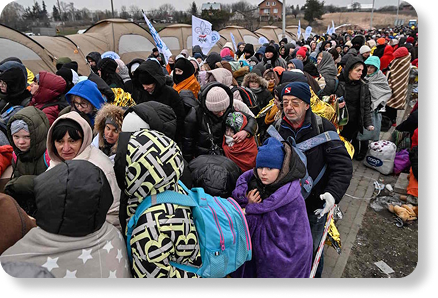
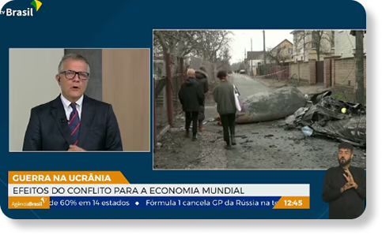

Meninas e meninos continuam a ser mortos, feridos e profundamente traumatizados pela violência que provocou deslocamentos em uma escala e uma velocidade nunca vistas desde a Segunda Guerra Mundial. Escolas, hospitais e outras infraestruturas civis das quais dependem continuam a ser danificados ou destruídos.
Famílias foram separadas e vidas dilaceradas. O UNICEF estava na Ucrânia antes do início da guerra e nas semanas e meses desde então permaneceu e entregou ajuda humanitária. Está com as crianças e os adolescentes da Ucrânia e continuará trabalhando com parceiros para apoiá-los durante a guerra e além.

SERÁ QUE ESTÃO CURTINDO O SITE?
Ucrânia inicia cooperação militar
Efeitos da guerra na Economia
Onde os refugiados ucranianos estão indo
 